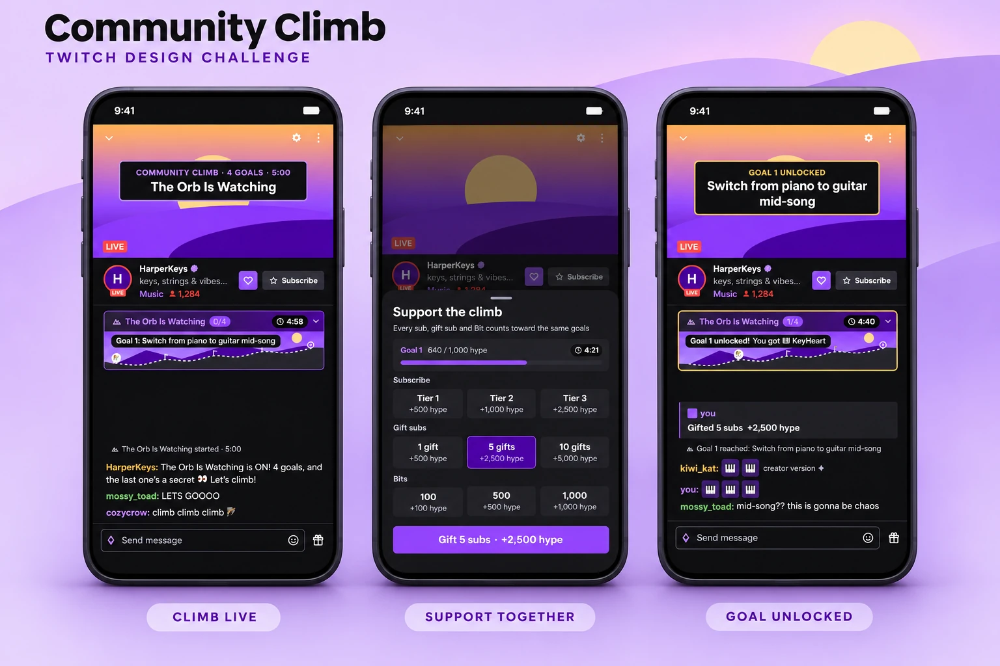
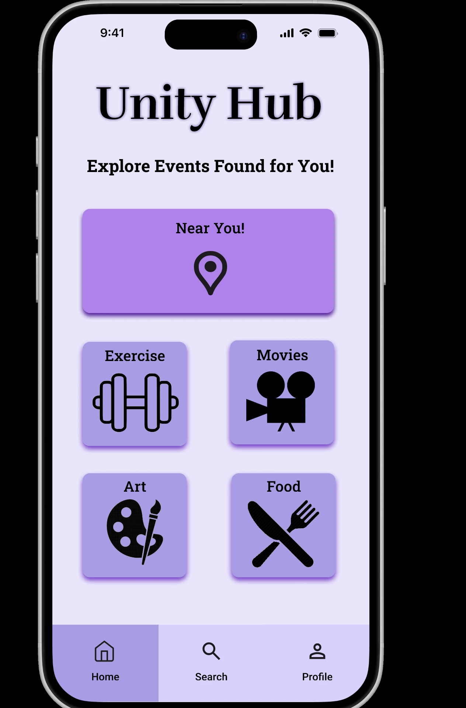

ILLUSTRATION BASED ON THE COMMUNITY CLIMB FIGMA DESIGN↗Community Climb2026TWITCH DESIGN CHALLENGE · UX/UI DESIGN
ILLUSTRATION BASED ON THE META FIGMA DESIGN · CREATE → ASK → SHARE → RSVP↗Where Plans Go to Die?2026META DESIGN CHALLENGE · UX RESEARCH & DESIGN
UNITY HUBYOUR CAMPUS. YOUR COMMUNITY.01 / HOME02 / DISCOVER03 / PROFILEORIGINAL FIGMA SCREENS · UNITY HUB↗Unity Hub2024HUMAN-COMPUTER INTERACTION · APP DESIGN
ACCENTURE / FORAGEA new feature.A clearer experience.● ● ●PRODUCT DESIGN01 / EXPLOREExisting experience02 / ITERATE＋ New featureRefined experienceDESIGN → REFINE → EXPLAIN ↗PROCESS ILLUSTRATION · FORAGE JOB SIMULATION↗Accenture North AmericaDEC 2024PRODUCT DESIGN JOB SIMULATION · FORAGE